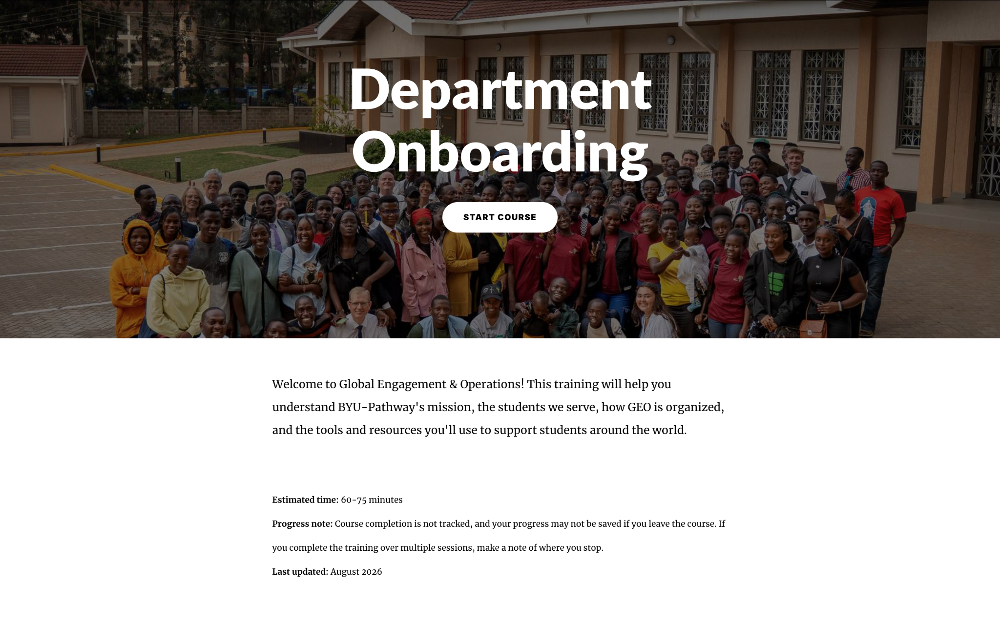

BYU–Pathway Worldwide2026

GEO Department Onboarding course overview01 / 10
flagship
project
project
01 / Featured project
From organizational complexity to a shared starting point
Designing the organization’s first onboarding course from the ground up—connecting analysis, stakeholder collaboration, multimedia development, and iterative improvement.
View case study